Quiberville 2010

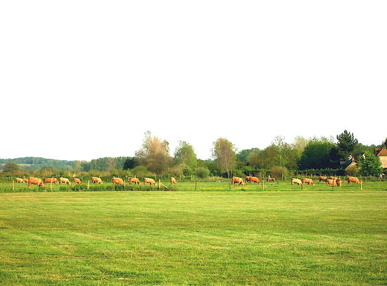
Quiberville, une belle plage, avec des bateaux de pêche qui s'échouent et vendent le poisson au bord de la route! Mais du terrain, on ne voit pas la mer, c'est un marécage de fond de vallée, asséché et plus bas que la digue... Arrivé vendredi soir, je vole dans un joli vent et un grand beau temps, malheureusement ça ne se prolongera pas les jours suivants !

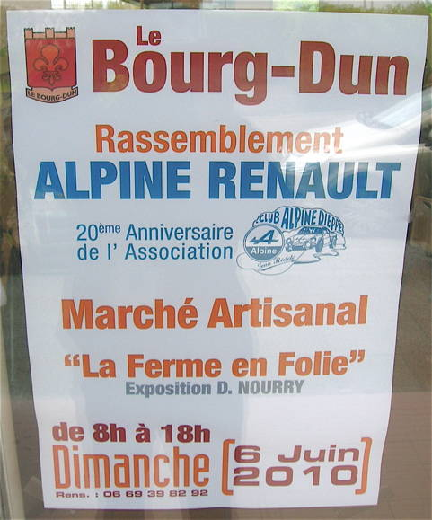
Dès le matin, des bruits de voiture rageurs montent la côte d'en face. Normal, c'est un rassemblement d'Alpines Renault qui ont été d'ailleurs fabriquées pas loin de Dieppe, par Jean Rédélé initialement depuis 1955, arrêt en 1995...

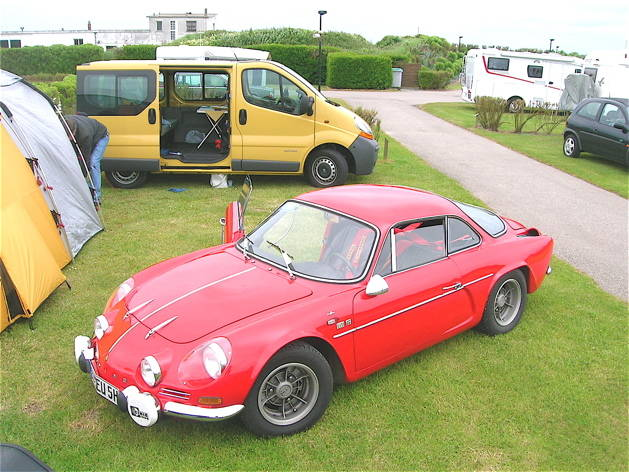
Heureusement, l'une d'elles va dormir au camping voisin, j'y cours avant qu'elle ne disparaisse ! Splendide voiture, cette berlinette, et légère, chassis-tube hyper-rigide et carrosserie plastique, ça tenait la route de façon incroyable ! Mais la couleur ferrarisante de cette Alpine allemande tranche avec le bleu de France habituel...

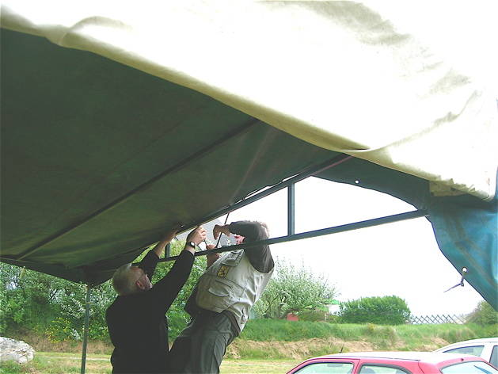
Samedi matin, la météo n'annonce pas de pluie, mais on monte quand même les bâches. Il faut être 7 (4 tirent par-dessus avec des cordes, 3 aident le mouvement par-dessous avec des balais), elles pèsent un poids d'enfer !

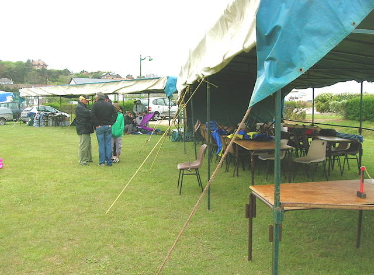
Bon, terminé, on a même mis des tirants pour ne pas que ça joue les cerfs-volants (chacun son domaine) ! Les tables et les chaises sont là, mais il faut d'abord justifier notre présence !

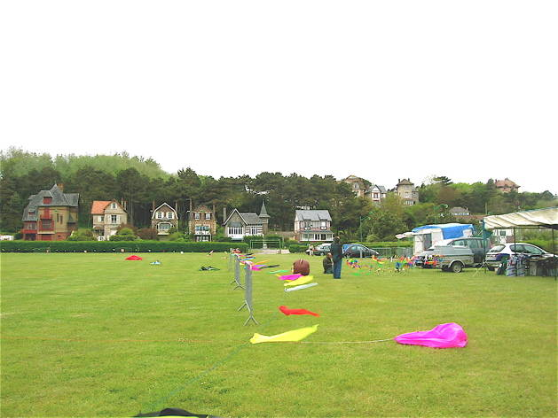
Les terrains sont aussi délimités, un pour les pros, et un pour les débutants, mais tout le monde se mélangera joyeusement...

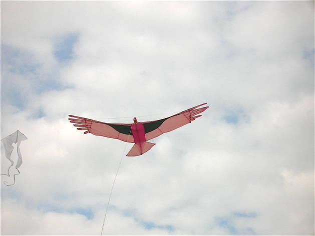
Le vent devient vite solide, et de derrière la colline, il nous envoie bourrasques et tourbillons, il faut s'accrocher pour voler ! Je sors mon Condor, le plus stable dans les turbulences, mais il souffrira !

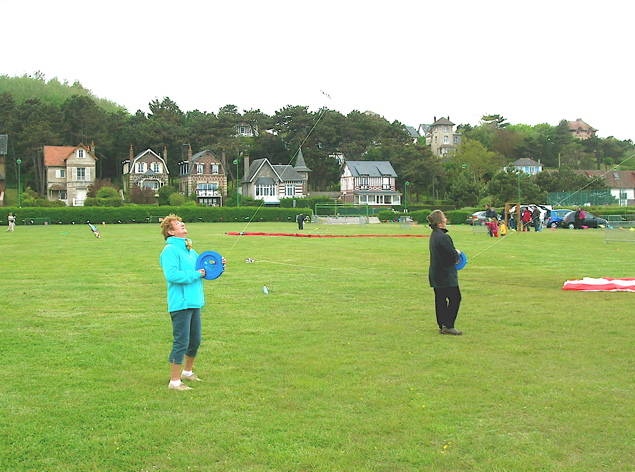
Antoinette et Lise s'affrontent avec des deltas, et il y aura autant d'accrochages que dans un combat de Rokkakus !

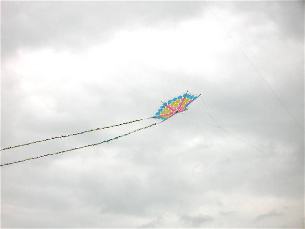
Un joli parapluie transparent mais décoré vole bien, avec ces immenses queues ! Mais on ne le verra plus quand le vent forcera vraiment...

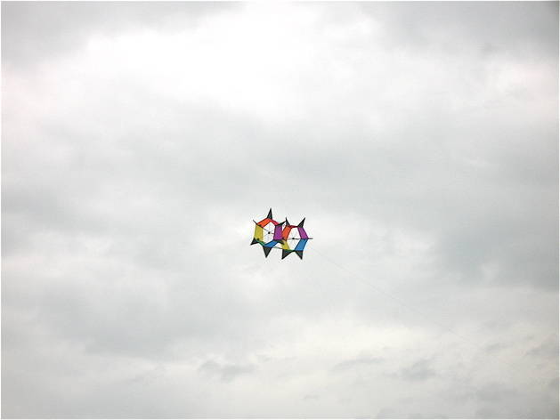
Ce petit revolver qui tombait souvent par vent faible, s'agitera mais jouira beaucoup d'un vent plus fort...

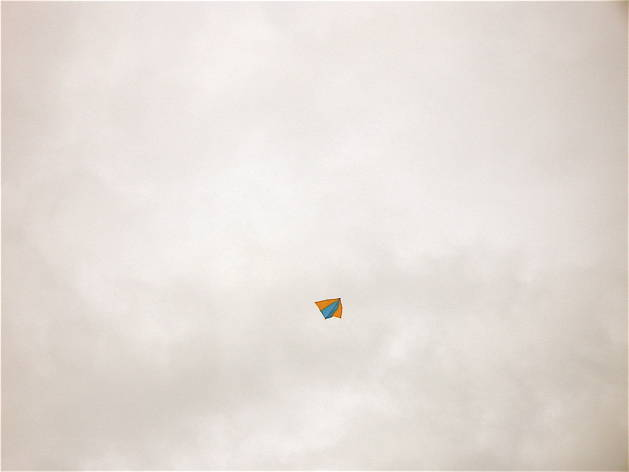
François Périault a mis en l'air son Delta Vapeur à 07h30 ce matin, il le descendra ce soir après 16h30 de vol, par précaution, pour ne pas risquer de le voir tomber éventuellement dans le camping...

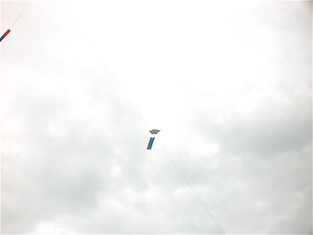
Il montera aussi (il ne veut pas redescendre le Delta !) ce V13 à queue plate pour faire de la photo, bien que ça balance pas mal !

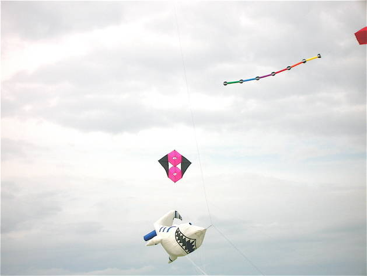
On verra encore cette boîte à petites ailes qui bouge pas mal mais reste en l'air...

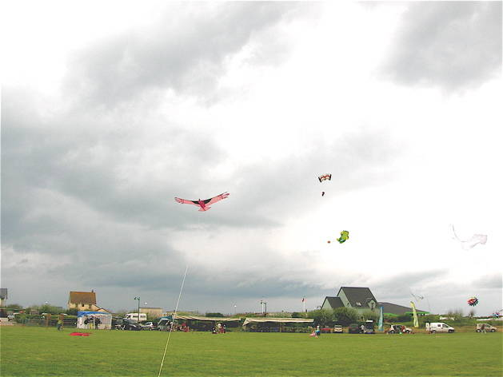
Le ciel menace à l'horizon, il fait même plus que menacer pour ceux qui sont là-bas ! Mais ici, il ne pleuvra pas aujourd'hui !

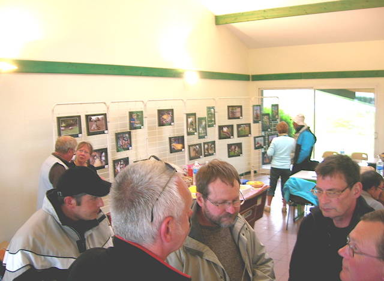
Au soir, comme il fait froid et venteux et que la pluie menace, Eric a obtenu la salle du camping pour un apéritif et le repas ensuite ! Un photographe y a monté une belle expo sur le thème des métiers manuels anciens : tondeur de moutons, maréchal-ferrant, matelassier, faucheur et autres...

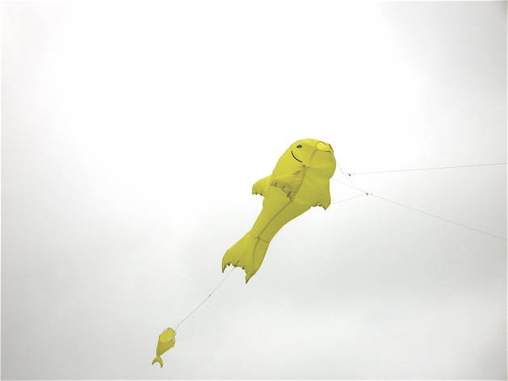
Dimanche matin, on attend de la pluie, mais en fait il ne pleuvra pas beaucoup (pas comme au vol de nuit d'hier soir) ! Mais le vent est toujours très fort. Gildas Thomas fera voler ce poisson pilotable deux-lignes, une évolution d'un ornement de ligne anobli en vrai cerf-volant. La maniabilité est limitée, mais on peut quand même faire des voltes complètes... A recommander dans les vents forts !

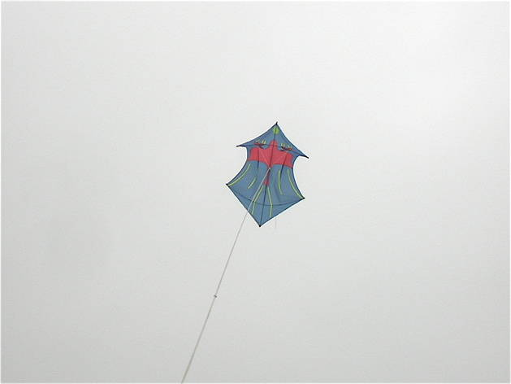
Juste pour vous montrer que je ne raconte pas d'histoires, voilà comment j'ai été obligé de cintrer mon Rokkaku pour qu'il ne tombe que toutes les 10 minutes !

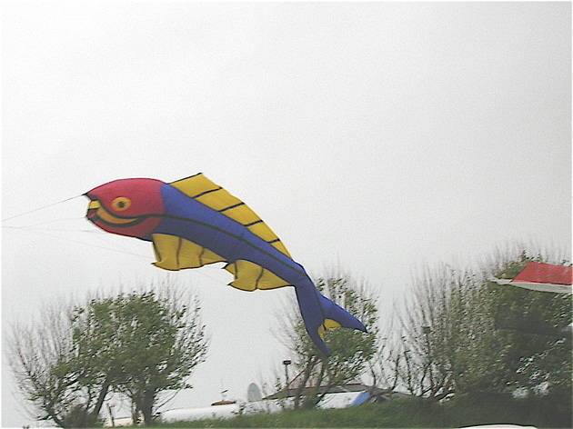
Encore un beau poisson, très grand (3 m ?), mais resté dans son rôle d'ornement de ligne...

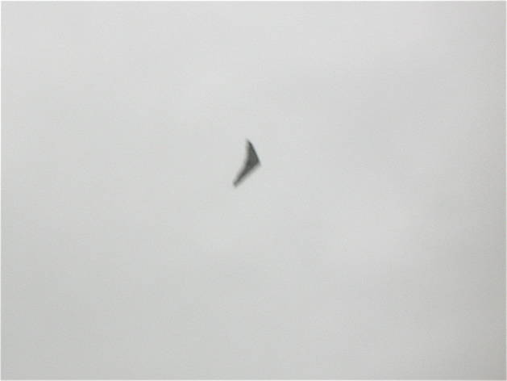
Eric a apporté un cerf-volant de vitesse que l'on entend siffler à 100 m ! Il a aussi le radar, pour enregistrer les records lors des passes. Il atteindra 130 km/h, ce qui n'est pas mal !

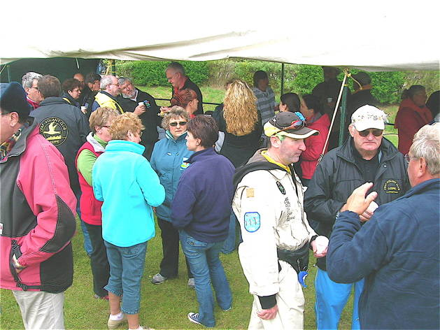
A midi, déjeuner offert sous la tente, avec un petit apéritif pour se réchauffer...

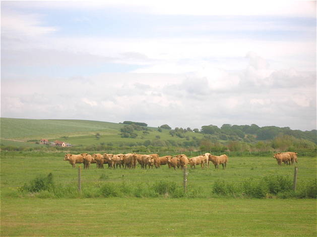
L'après-midi, les vaches sont un peu effrayées par le flappement violent des cerfs-volants, restent groupées et ne s'approchent pas de la clôture !

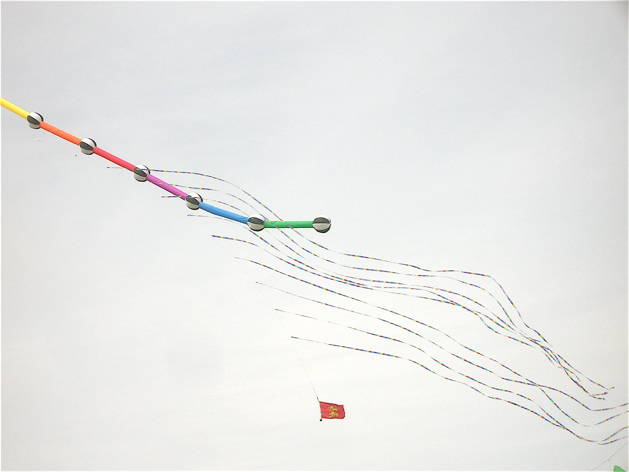
Les vols sont difficiles, on verra beaucoup les flow-forms avec d'énormes queues stabilisatrices, et porteurs de nombreux ornements de ligne. L'un cassera même sa ligne à force de tirer...

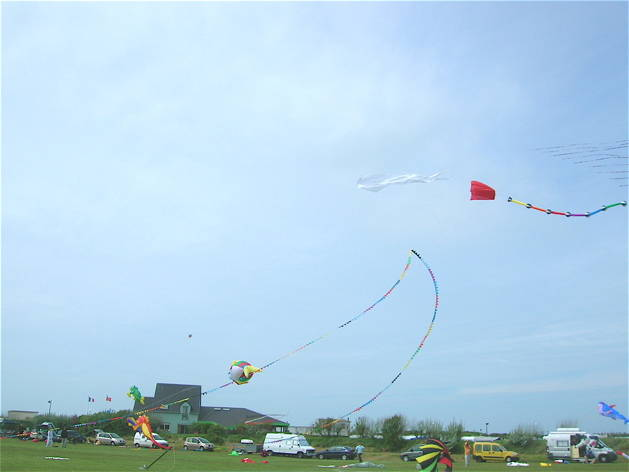
L'un lève cette double ligne de mini-fanions que le vent courbe bien ! Au fond, Patrick lève aussi ses grenouilles, en compagnie d'hippocampes...

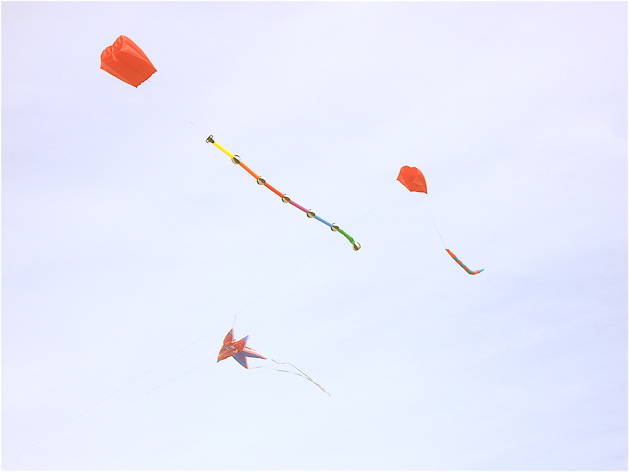
Les flow-forms se font concurrence. Thierry Lécuyer a pu monter sa relativement petite étoile gonflable !

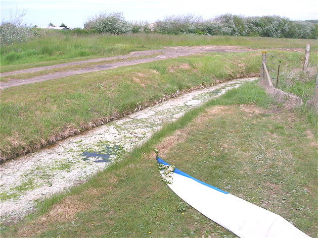
Je tâte de l'Albatros, mais impossible de le régler pour qu'il étale les surventes. Après une heure d'essai de palliatifs divers où il tombe alternativement sur la clôture de barbelés ou dans le ruisseau plein d'algues (?) blanchâtres, je finirai par le plier (et reboucher les trous au Blenderm)...

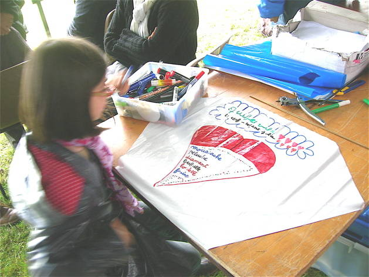
Le Club de Dieppe a aussi fait tourner un atelier d'où sortiront des oeuvres d'art magnifiques...

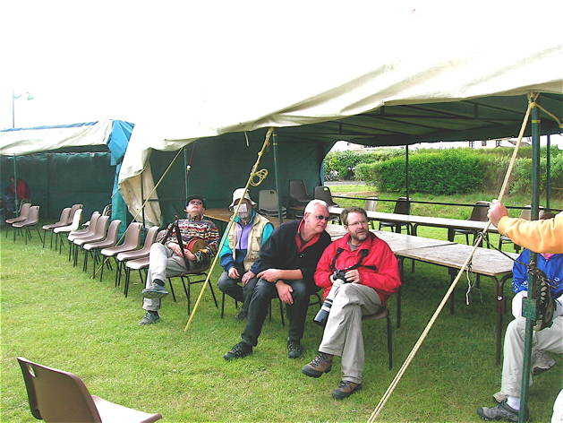
Ca se termine, les cerfs-volants descendent progressivement (sauf celui de François qui ne fatigue pas...). Les organisateurs s'accordent une petite pause bien méritée... Merci à eux et à toute l'équipe pour cette rencontre amicale et bon enfant, mais finalement bien organisée...

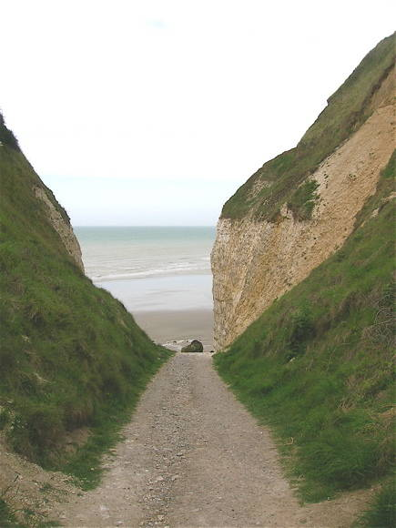
Je ferai un bout de chemin avant de rentrer à la maison demain... Un petit tour pas loin, à la Valleuse de Vasterival... En approchant, on a bien l'impression qu'il faudra sauter de la falaise !

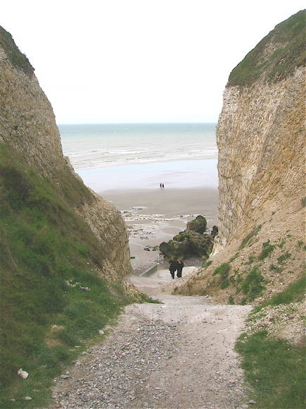
En s'approchant (on ne court pas, quand même !) on voit qu'il y a finalement un solide escalier et même une rampe... Bien sûr, des pierres dégringolent régulièrement sur le passage, mais avec un peu de chance, ça devrait passer...

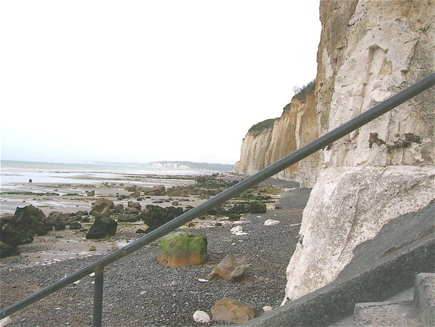
Ca y est, on émerge du défilé, on voit la hauteur de falaise où on est situé... On voit aussi qu'elle n'a pas l'air bien solide et qu'il en est déjà tombé de gros paquets...

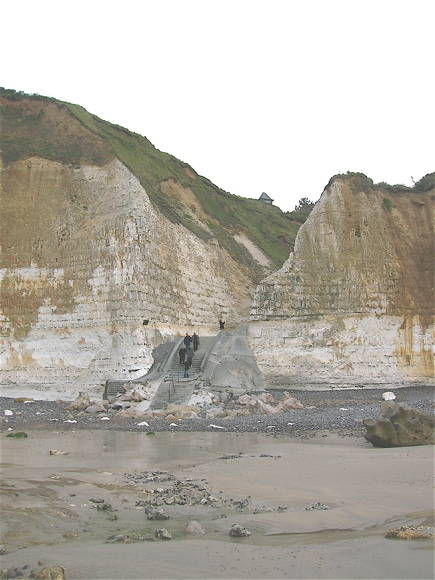
De la plage, en se retournant, on voit bien la configuration de cette vallée qui a fini par déboucher presqu'au niveau de la mer. La route, elle, s'arrête au sommet de la falaise, il a fallu descendre à pied...

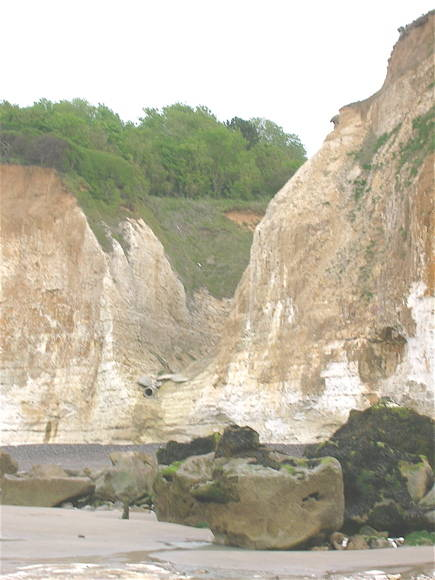
A côté, une autre valleuse, qui n'a pas été équipée, celle-là, sinon d'un gros tuyau qui doit limiter l'érosion !
Quiberville 2010 : Un beau terrain, pas trop grand quand le vent est tumultueux comme cette année. Une rencontre agréable et bon enfant, mais pourtant bien organisée et généreuse... Merci le CVCD !